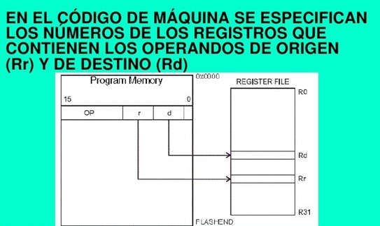

El conjunto de instrucciones de una máquina debe ser regular, es decir
debe ser simétrico (por ejemplo, si existe una instrucción de
desplazamiento a la izquierda, debe haber otra de desplazamiento a la derecha,
etc.) y ortogonal, es decir, deben poder combinarse, en la medida de lo posible,
todos las operaciones con todos los tipos de datos y modos de direccionamiento.
En muchas ocasiones, también se le debe exigir a un computador que su juego
de instrucciones sea compatible con modelos anteriores.
Tipos de instrucciones
Una máquina puede llegar a funcionar con un juego de instrucciones
muy limitado (recuérdese, por ejemplo, la máquina de Turing
que sólo tiene 4 instrucciones, incluso se han diseñado máquinas
teóricas con menos instrucciones), esto simplificaría mucho los
circuitos de la máquina. Sin embargo, un conjunto de instrucciones demasiado
simplificado origina, como consecuencia, unos programas demasiado complejos e ineficientes.
Es necesario encontrar un compromiso entre la simplicidad del hardware y del software.
Un mínimo para llegar a ese compromiso se consigue con los tipos
de instrucciones siguientes:
Instrucciones de transferencia de datos.
Instrucciones aritméticas.
Instrucciones lógicas.
Instrucciones de control del flujo del programa (bifurcaciones, bucles, procedimientos, etc.)
Instrucciones de entrada y salida. En los apartados siguientes iremos
viendo con detalle algunos de estos tipos de instrucciones. Si bien es cierto
que el conjunto de instrucciones debe de cumplir unos mínimos para conseguir
una mínima eficiencia en los programas, también se verá que
ésta no se aumenta indefinidamente al incrementar el número de
instrucciones de la máquina.
